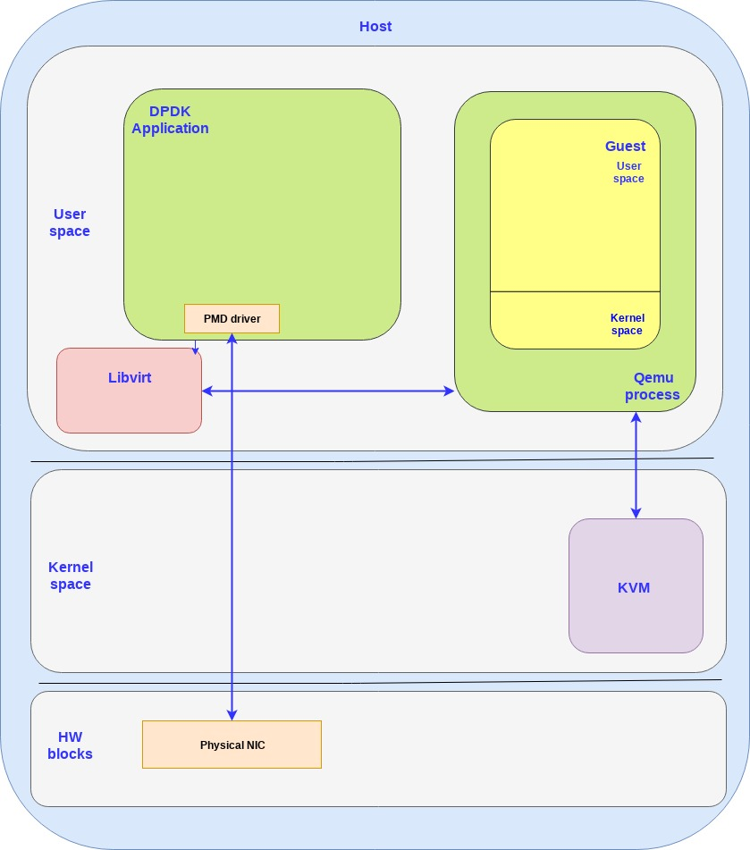
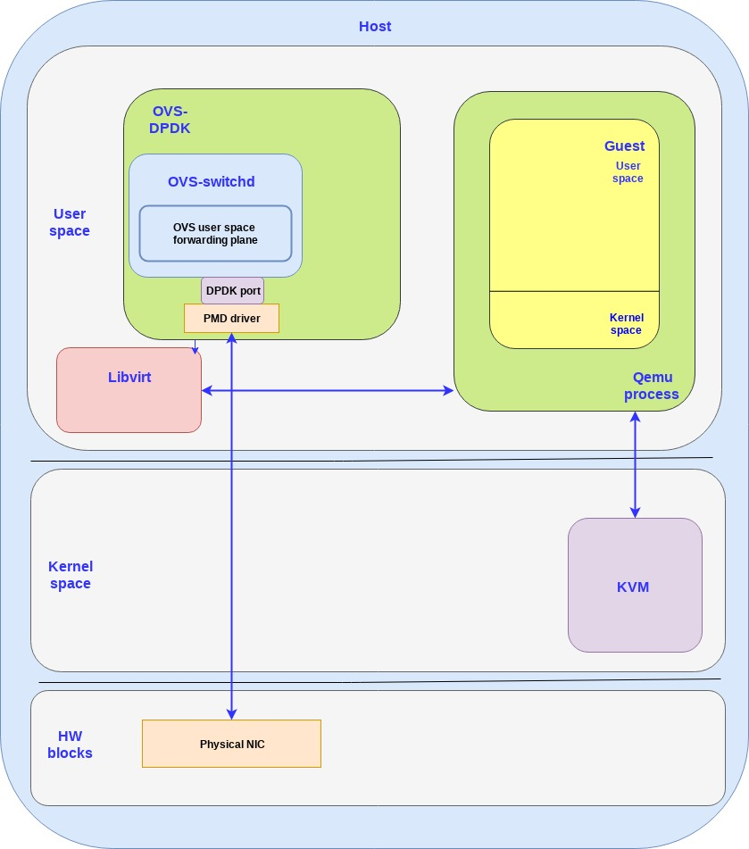
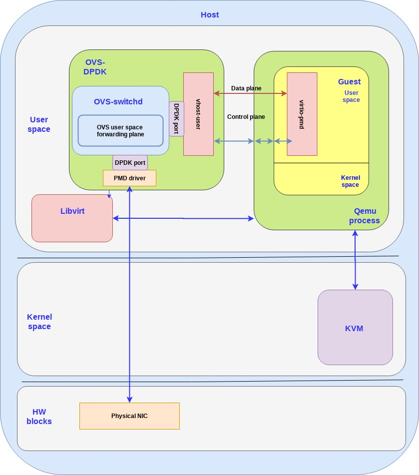

How vhost-user came into being: Virtio-networking and DPDK¶
Copy from https://www.redhat.com/en/blog/how-vhost-user-came-being-virtio-networking-and-dpdk
In this post we will provide a high level solution overview of a virtio architecture based on Data Plane Development Kit (DPDK) in the host and guest. The blog will be followed by a technical deep dive blog intended for architects/developers and a hands on blog for those who enjoy getting their hands dirty.
The previous blogs (see end of post) included the solution overview, a technical deep dive and a hands on post introducing the reader to the virtio-networking ecosystem including an overview of the basic building blocks (kvm, qemu, libvirt), the vhost protocol and the vhost-net/virtio-net architecture. This architecture is based on a vhost-net in the kernel host side (backend) and a virtio-net in the kernel guest side (frontend).
The vhost-net/virtio-net architecture provides a working solution which has been widely deployed over the years. On the one hand the solution is very convenient for a user developing an application running on a VM given that it uses standard Linux sockets to connect to the network (through the host). On the other hand, the solution is not optimal and contains a number of performance overheads which will be described later on.
In order to address the performance issues we will introduce the vhost-user/virtio-pmd architecture. To understand the details we will review the data plane development kit (DPDK), how OVS can connect to DPDK (OVS-DPDK) and how does virtio fit into the story both on the backend side and the frontend side.
By the end of this blog you should have a solid understanding of the vhost-user/virtio-pmd architecture and its differences from the vhost-net/virtio-net architecture.
DPDK overview¶
DPDK aims to provide a simple and complete framework for fast packet processing in data plane applications. It implements a “run to completion model for packet processing” meaning that all resources need to be allocated prior to calling the data plane application. Those dedicated resources are executed on dedicated logical processing cores.
This is opposed to a Linux kernel where we have a scheduler and interrupts for switching between processes, in the DPDK architecture the devices are accessed by constant polling. This avoids the context switching and interrupt processing overhead at the cost of dedicating 100% of part of the CPU cores to handle packet processing.
In practice DPDK offers a series of poll mode drivers (PMDs) that enable direct transfer of packets between user space and the physical interfaces which bypass the kernel network stack all together. This approach provides a significant performance boost over the kernel forwarding by eliminating interrupt handling and bypassing the kernel stack.
The DPDK are a set of libraries. Thus, in order to use them, you need an application that links with these libraries and invokes the relevant APIs.
The following diagram shows the previous virtio building blocks and a DPDK app using a PMD driver to access a physical NIC (bypassing the kernel):
OVS-DPDK overview¶
As was described in the previous blog open vSwitch generally forwards packets using the kernel space data path. This means that the OVS kernel module contains a simple flow table for forwarding packets received. Still, a small part of the packets which we call exception packets (first packet in an Openflow flow) don’t match an existing entry in the kernel space and are sent to the user space OVS daemon (ovs-vswitchd) to be handled. The daemon will then analyze the packet and update the OVS kernel flow table so additional packets on this flow will go directly via the OVS kernel model forwarding table.
This approach eliminates the need for context switches between user space and kernel space for most of the traffic however we are still limited by the Linux network stack that is not well suited for use cases with high packet rate demands.
If we integrate OVS and DPDK we can leverage the PMD drivers previously mentioned and move the previous OVS kernel module forwarding table to the user space.
This diagram shows an OVS-DPDK application where all the OVS components are running in userspace and is leveraging the PMD driver to communicate with the physical NIC:
It should be mentioned that although we only see the DPDK application running on the host userspace, it is also possible to run a DPDK application with the PMD driver in the guest userspace. This will be elaborated in the next section.
The vhot-user/virtio-pmd architecture¶
In the vhost-user/virtio-pmd architecture virtio uses DPDK both on the host userspace and guest userspace:
vhost-user (backend) - Running on the host userspace as part of the OVS-DPDK userspace application. As mentioned DPDK is a library and the vhost-user module are additional APIs inside that library. The OVS-DPDK is the actual application linked with this library and invoking the APIs. For each guest VM created on the host, another vhost-user backend will be instantiated to communicate with the guest’s virtio frontend.
virtio-pmd (frontend) - Running on the guest userspace and is a poll mode driver consuming dedicated cores and performing polling with no interrupts. For an application running on the user space to consume the virtio-pmd it needs to be linked with the DPDK library as well.
This diagram shows how this all comes together:
If we compare this architecture to the kernel based vhost-net/virtio-net architecture the vhost-net was replaced with vhost-user while virtio-net was replaced with virtio-pmd.
By enabling the host userspace to directly access the physical NIC through shared memory bypassing the kernel and by using the virtio-pmd on the guest userspace also bypassing the kernel the overall performance can improve by a factor of 2 to 4.
This, however, comes at a cost from usability aspects. In the vhost-net/virtio-net architecture the data plane communication was straightforward from the guest OS point of view: simply add the virtio drivers to the guest kernel and the guest user space applications automatically gets a standard Linux networking interface to work with.
In contrast in the vhost-user/virtio-pmd architecture the guest user space application is required to use the virtio-pmd driver (from the DPDK library) in order to optimize the data plane. This is not a trivial task and requires expertise for properly configuring and optimizing the DPDK usage.